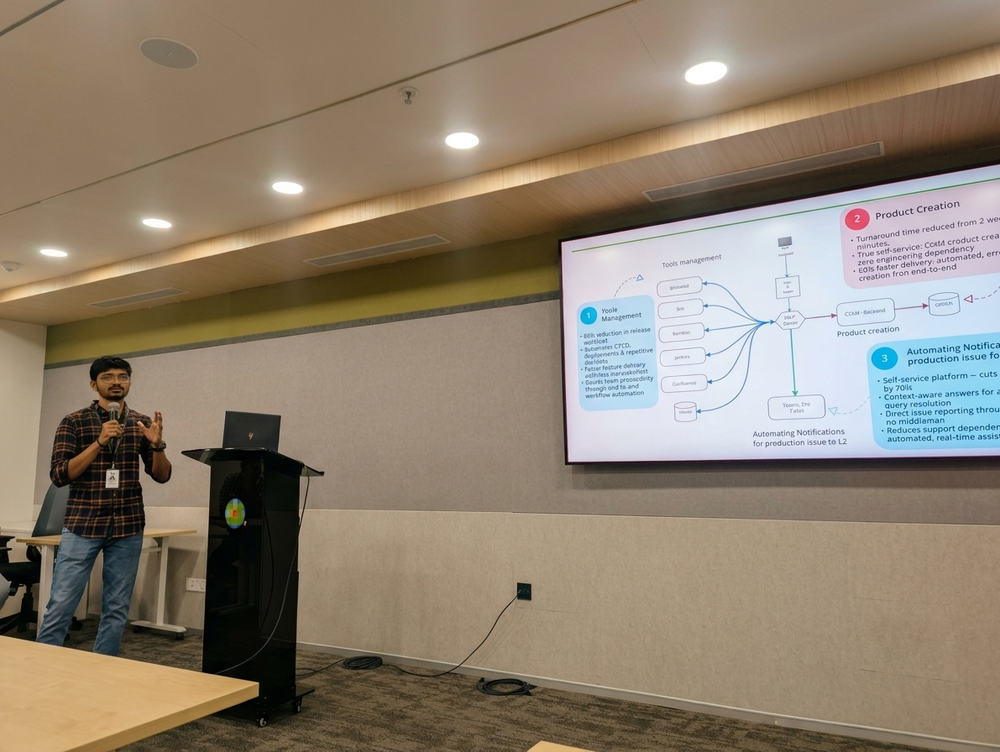
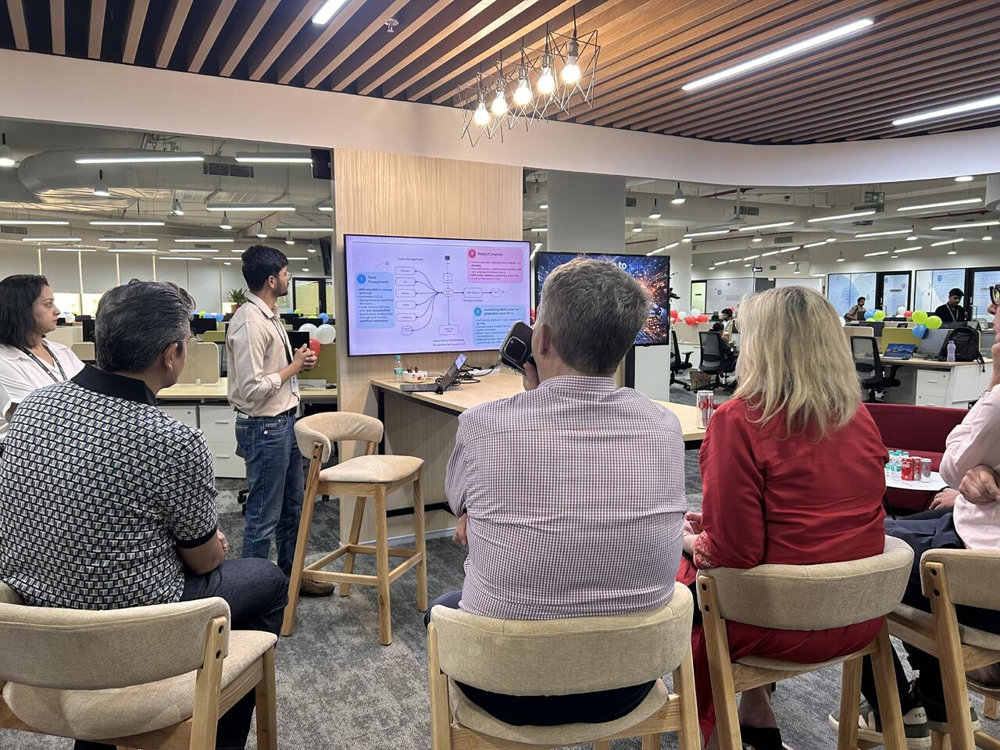
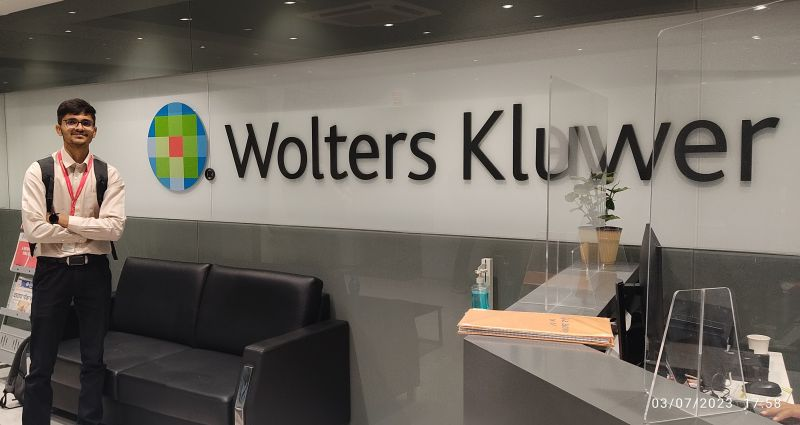
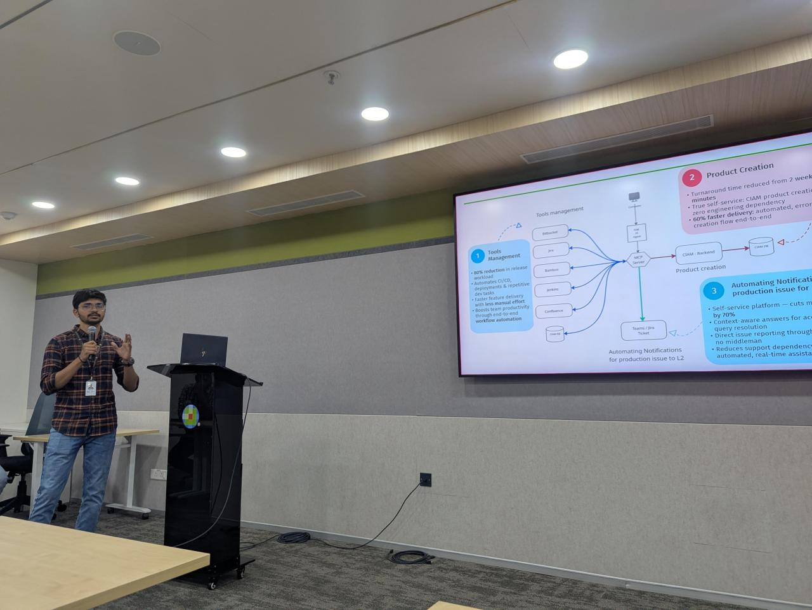

Backend Engineering
Java, Spring Boot, OOP, backend application development.
Hey, I am Aditya Sabde
Software Engineer with 2+ years of experience specializing in Java, Spring Boot, and backend development. Skilled in building REST APIs, microservices, and cloud-native applications, with hands-on experience in AWS, Docker, CI/CD, and distributed systems. Focused on developing scalable, reliable, and maintainable software solutions.
Download CVMy Skills
Java, Spring Boot, OOP, backend application development.
REST APIs, service integration, distributed architecture.
PostgreSQL, MySQL, Hibernate, Spring Data JPA.
AWS, Docker, CI/CD, Jenkins, deployment workflows.
JUnit, Mockito, debugging, production troubleshooting.
Spring AI, MCP, AI agents, developer workflow automation.
About Me
I'm 23 and earned a Bachelor of Technology in Computer Science from Vishwakarma Institute of Technology in Pune, where I studied from 2021 to 2024. I'm a Java Backend Engineer with 2+ years of professional experience building and maintaining backend applications using Java and Spring Boot. My work focuses on microservices architecture, REST API development, database integration, and improving system performance.
At Wolters Kluwer, I contributed to enterprise backend systems, including optimizing synchronization processes and reducing processing latency by 60%. I'm also exploring AI-driven development through Spring AI and Model Context Protocol (MCP).
Career journey

Apr 2026 — Present
Wolters Kluwer · Pune City, Maharashtra, India · On-site

Jul 2024 — Apr 2026
Wolters Kluwer · Pune District, India · On-site

Jul 2023 — Jun 2024
Wolters Kluwer · Pune, India
Selected work
Built an MCP server with Spring AI to connect Jira, Bamboo, Jenkins, Confluence, Bitbucket, and database tools. Also developed a Java Copilot agent that retrieves lower-environment logs and generates failure and root-cause reports.
Created a full-stack quiz platform with domain-based services, Eureka service discovery, OpenFeign communication, and REST APIs for quiz workflows.
Learning & recognition
Spotlight Award
Wolters Kluwer·Issued Apr 2026
Credential ID: 52fd3abb-8ffa-40e6-a0ea-6f1d243fcaaa
Skills: AI Automation, Artificial Intelligence (AI)
Delivered a technical presentation to senior engineering and CTO leadership, explaining system architecture, key problem statements, and solution approaches. The session focused on design decisions, scalability considerations, and practical implementation insights, encouraging structured discussion and feedback at an executive technical level.

Conducted an internal demo session for colleagues at the Wolters Kluwer Pune office, presenting the same project in progress. The walkthrough covered solution architecture, core workflows, and implementation details, enabling shared understanding, alignment, and constructive technical discussions across the team.
LinkedIn·Issued Apr 2026
Show certificateSkills: Java Concurrency
LinkedIn·Issued Mar 2026
Show certificateSkills: Artificial Intelligence (AI), Java Software Development
freeCodeCamp·Issued Apr 2022
Show certificateSkills: Cascading Style Sheets (CSS), Web Development